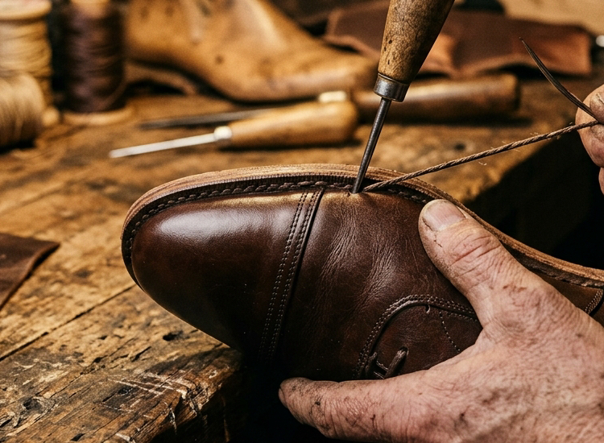
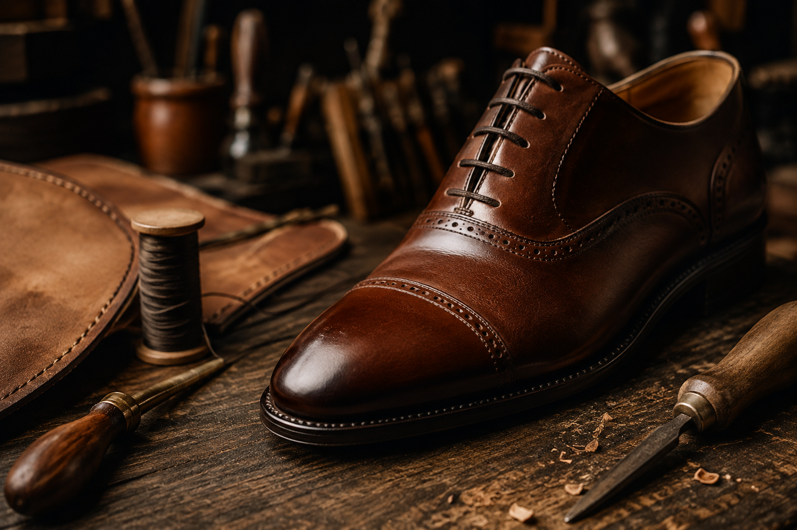
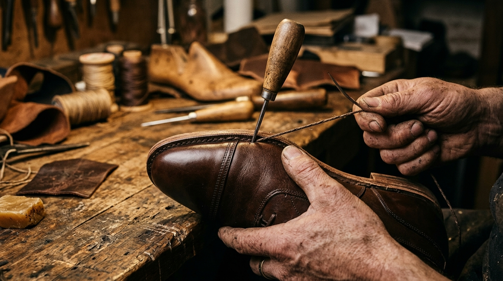
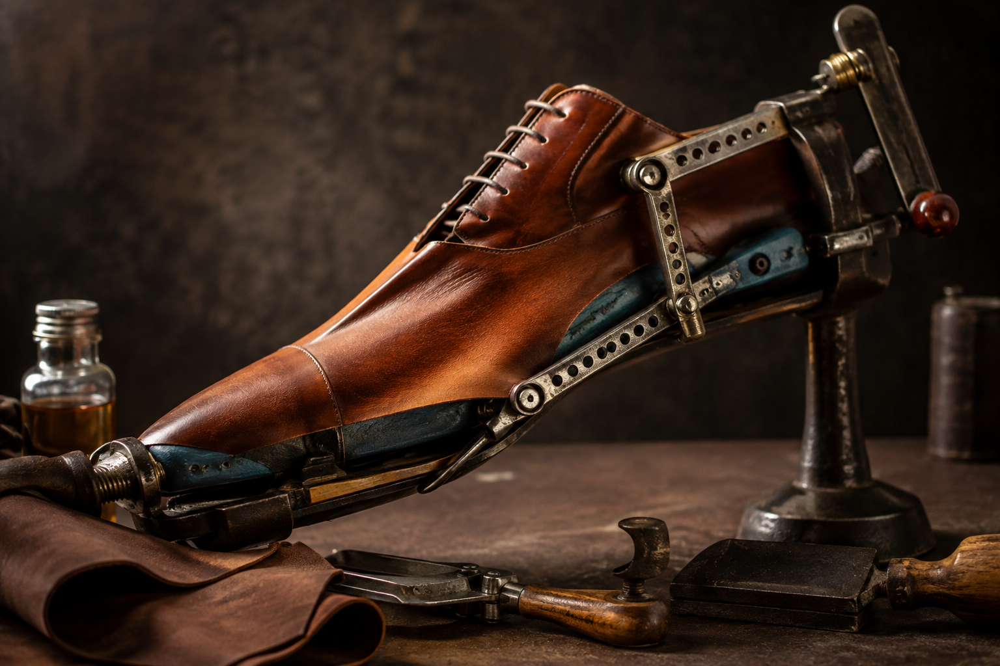
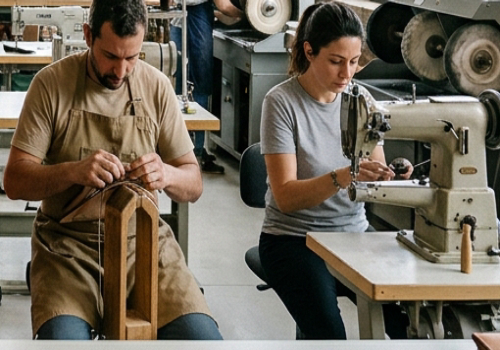
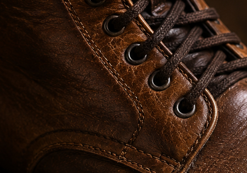
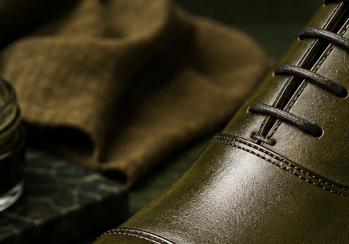

The Architecture of Mastercraft
Every pair requires up to 52 meticulous bench hours across 200 distinct operations. Explore the mechanical integrity of Goodyear inseams, oak-bark tanning, and hand-lasted ergonomics.
Anatomy of a Goodyear Welted Shoe
Goodyear welting remains the undisputed benchmark of world-class shoemaking. It forms a completely rebuildable, water-resistant chassis that sets our footwear apart from glued fast-fashion alternatives.
Dual-layer leather upper skived to precise thicknesses to flex smoothly across the instep without bite.
Thick vegetable leather insole provides the internal backbone. The welt is sewn directly to its downward carved rib.
Fills the cavity between insole and outsole. Molds to the exact contours of the wearer's footprint while absorbing walking shock.
Embedded into the waist to prevent arch collapse and provide spring-assisted energy return on every stride.
Rapid-stitched to the welt strip through a concealed channel, keeping stitches protected from road grit and rain.

12 STITCHES PER INCH • WAXED HEMPRe-Soleable 8 to 10 Times
Because the welt is sewn to the perimeter rather than directly to the upper leather, worn outsoles can be detached and replaced repeatedly without diminishing the shoe's customized shape.
The Six Crucial Atelier Stages
Leather Selection & Grain Examination
Before a single blade touches hide, master inspectors place the full cowhide over illuminated light tables. They examine dermal fiber density, reject vein marks or insect bites, and map the animal's natural spine grain. Only symmetrical, unblemished sections are reserved for vamp and toe caps.


Precision Clicking & Edge Skiving
"Clicking" is the ancient term for hand-cutting leather patterns. Clickers orient each piece along the hide's zero-stretch axis so the finished shoe will never lose its tailored form or sag sideways. Cut components then pass to the skiving bench where edges are feathered down to 0.4mm to eliminate uncomfortable friction.
Upper Closing & Glove Lining Assembly
Closing brings all upper panels, heel counters, and linings together. Using German-engineered twin-needle machines and hand-guided awls, machinists stitch at 12 to 14 stitches per inch using high-tensile bonded nylon threads. Linings are crafted from vegetable-tanned full calf glove leather that actively absorbs transpiration.


72-Hour Wooden Lasting & Inseaming
Mass manufacturers pull shoes over plastic lasts for mere seconds before heat-curing glue. At Vernon & Vale, uppers are pulled over carved hornbeam lasts under multi-directional hydraulic tension and allowed to dwell for 72 full hours. This permanently molds the leather collagen to the 3D curves of the instep and toe box.
Edge Trimming, Wheeling & Iron Waxing
Once the heavy oak-bark outsole is stitched to the welt, sole edges are sculpted with hand trimming irons. Master cordwainers apply hot friction irons coated in organic carnauba and beeswax. The intense heat liquefies the wax deep into the leather pores, creating an impenetrable seal against road salt, moisture, and gravel abrasion.

Multi-Point QA & Champagne Glazing
No pair leaves our workshop without passing a 14-point benchmark check: seam tension, last alignment, toe cap symmetry, and insole bed flatness. Finally, shoes receive our signature "glaçage" mirror polish: 30 minutes of rhythmic circular friction using fine champagne-dampened cotton cloths and high-wax pastes until the toe reflects like dark obsidian glass.
The Master Cordwainer's Hands
Watch the meticulous transformation of raw hide into enduring footwear through generational hand-tooling and Goodyear welted lock-stitching.
Mastercraft In Motion • Live Atelier Reel
Awl piercing, channel cutting, corkbed leveling, and edge burnishing.
Understanding Leather Grades
How to distinguish true bench-grade luxury hides from industrial corrected-grain substitutes.
| Property | Full-Grain French Calf (Our Standard) | Top-Grain Leather | Corrected Grain / "Genuine Leather" |
|---|---|---|---|
| Surface Treatment | 100% Unaltered natural epidermis | Lightly sanded to remove minor marks | Sanded off completely; stamped with artificial grain |
| Breathability | Maximum; natural open pores breathe | Moderate; light polymer topcoat | Zero; plastic polyurethane coating traps heat |
| Patina Ability | Develops rich, glowing antique depth | Minimal aging; tends to fade or scuff | Cracks and peels over 6 to 12 months |
| Tensile Strength | Highest dense collagen fiber pack | Good strength, moderate elasticity | Prone to tearing under high stress |
| Lifespan with Care | 20 to 30+ Years (Re-soleable) | 4 to 7 Years | 1 to 2 Years maximum |
Tools of the Cordwainer's Bench
While computer-guided machinery assists cutting, the soul of a bench-grade shoe is shaped by traditional hand tools unchanged since the Italian Renaissance.
French Clicking Knife
Curved razor blades hand-sharpened on Arkansas oilstones to slice cleanly along hide grain lines without dragging leather fibers.

Carved Hornbeam Lasts
Turned from dense European hornbeam seasoned over two winters to resist warping under hydraulic lasting pressures.

Curved Inseaming Awl
Hand-forged curved bodkins that pierce the feather rib and welt in one motion, guiding heavy pitch-waxed boar bristles.

Heated Copper Edge Irons
Gas-flame heated irons coated in carnauba wax to fuse edge fibers into a smooth, waterproof leather shield.